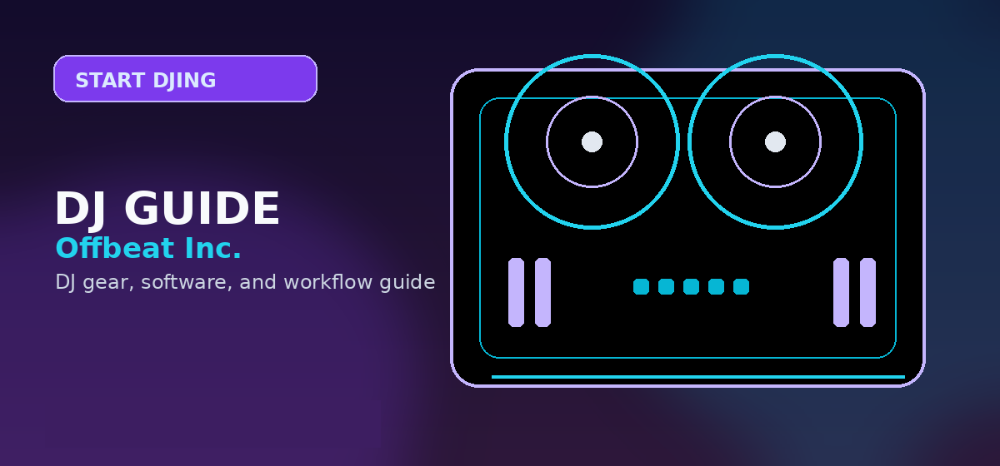

Start DJing in 2026: Complete Beginner's Roadmap
Complete beginner DJ guide 2026: which controller to buy, which software to use, how to mix, and how to get your first gig. Step-by-step guide by Offbeat Editorial Team.

Disclosure: This page uses affiliate links. We may earn a commission at no extra cost to you. Full disclosure →
Start Here: the 5-step beginner path
If you’re brand new, follow these in order. Each step links to the best next page so you don’t bounce between random “Top 10” lists.
How to use this hub
- Follow the 5 steps in order if you’re starting from zero.
- Use the table to jump to the single best next article.
- Buy gear last — you’ll make better choices after learning the basics.
- Practice daily (30 minutes beats a 3-hour weekend binge).
- Record a mix early so you can hear what to fix.
- Bookmark this page and come back whenever you’re stuck.
Learn the basics (BPM, phrasing, cueing)
Skim the fundamentals first, then start mixing. Use How to Start DJing and How to Mix Music (Beginners) as your foundation.
Choose your first gear (controller + headphones)
Start with a 2‑deck controller under $400. The Pioneer DDJ‑FLX4 is the best “grow-with-you” pick. On a tighter budget, use our controllers under $300 shortlist. Add closed‑back headphones: best under $100.
Pick software (free first)
Most controllers include Serato DJ Lite or rekordbox. Start with the bundled license, then upgrade only if you hit limits. Use Best Free DJ Software and Best DJ Software for Beginners.
Practice (the 30‑minute daily plan)
Mix every day for 30 minutes: beatmatch → phrasing → EQ swaps. Use How to Beatmatch Manually plus connect your controller to speakers so you practice like you’ll perform.
Record one mix + get your first gigs
Record a clean 30–45 minute mix and use it as your calling card. Follow how to record a DJ mix, then use how to get DJ gigs to book your first sets.
🧭 Quick roadmap table
| Step | What to do | Best next step |
|---|---|---|
| 1 | Learn BPM, phrasing, cueing, and library basics | How to Start DJing |
| 2 | Choose a beginner controller + closed-back headphones | Best DJ Controllers (Ranked) |
| 3 | Install the bundled software; start free before upgrading | Best Free DJ Software |
| 4 | Practice daily: beatmatch → phrasing → EQ transitions | How to Mix Music (Beginners) |
| 5 | Record a portfolio mix and pitch your first gigs | How to Get DJ Gigs |
Recommended Starter Kit by Budget
🎧 The $350 Starter Kit (Best Value)
| Item | Pick | Price |
|---|---|---|
| Controller | Pioneer DDJ-FLX4 | $349 |
| Headphones | Pioneer HDJ-CUE1 | $49 |
| Software | Serato DJ Lite (included free) | $0 |
| Total | ~$400 |
Find Your First DJ Controller on Amazon
Compare all beginner DJ controllers — Prime shipping, easy returns.
Beginner DJ Hub: pick your next step
Use these categories to navigate the site by intent (learn, buy, practice, or book gigs).
Learn the Fundamentals
Start with the basics so your practice sessions actually stick.
Start learning →Gear (Controllers + Setup)
Beginner gear recommendations that won’t box you in later.
- Best DJ Controllers (Ranked)
- Best Controllers Under $300
- DJ Equipment Checklist
- Beginner DJ Setup Guide
Practice & Skills
Beatmatching, phrasing, and recording — the core skills that get you booked.
Build skills →Common Beginner Mistakes to Avoid
- Buying too much gear too soon — A $100 controller teaches the same beatmatching as a $1,000 one. Start cheap, upgrade after 6 months.
- Skipping headphone practice — Learn to cue with headphones before gigging. This separates DJs from button-pushers.
- Ignoring track organization — Label genres, BPM, and energy in rekordbox/Serato BEFORE your first gig. Searching live is stress you don't need.
- Playing too many effects — Echo and reverb cover up poor mixing. Master clean EQ transitions first.
- No backup plan — Always bring a laptop-only backup option. Controllers fail. Gear fails. Laptops don't (usually).
The clean beginner sequence
The lowest-friction path is software first, controller second, headphones/speakers third, then recording and gig preparation. Buying every accessory at once creates clutter before the core skill is built.
- Pick a software path that matches the controller you are likely to buy.
- Buy one reliable beginner controller with headphone cueing.
- Practice phrasing, EQ transitions, and manual beatmatching.
- Record short mixes and fix the weak transitions before buying more gear.
Frequently Asked Questions
What do I need to start DJing?
A beginner controller, headphones, and the bundled free software is enough. Add speakers/monitors when you’re practicing at home.
Should I learn Serato or rekordbox?
Start with whichever comes bundled with your controller. If you plan to play on Pioneer club setups later, learning rekordbox early can help — but you can learn the fundamentals on either.
How long until I can play my first gig?
If you practice 30 minutes a day, most beginners can play a simple 30–45 minute set in 4–8 weeks. Consistency matters more than expensive gear.
Do I need to beatmatch manually?
Learn the basics even if you use sync. Manual beatmatching improves your phrasing and transition timing. Use our manual beatmatching guide as a skill builder.
What’s the fastest way to get your first booking?
Record one clean mix, upload it, and send it with a short pitch. Use our gigs guide to approach house parties, bars, and small venues.